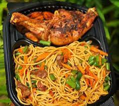

Stir Fry Spaghetti

Road To Making A Stir Fry Spaghetti
The Stir Fry Spaghettirecipe is a unique recipe created to meet the need of a Spaghetti lover
It is easy to make and can be compounded with different inridients for desired output
Ingridients
- Quality Spaghetti
- Chilli Pepper
- Groungnut Oil
- Chicken/Beef Stock
- Desired Seasonings
- Green Peas
- Corned Beef
Steps
- Parboil the Spaghetti
- Make Your desired stock
- Make a pepper paste using Onion and Tomatoes
- Bleech the oil with Regulated Heat
- Add the (pepper paste, stock and Desired Seasonings)
- After a few minutes, add your parboiled Spaghetti
- When the Spaghetti is almost done, add the Corned Beef and Green Peas
- Allow to Seamer for some minutes
- Voila! You have your Sumptuous Stir Fry Spaghetti